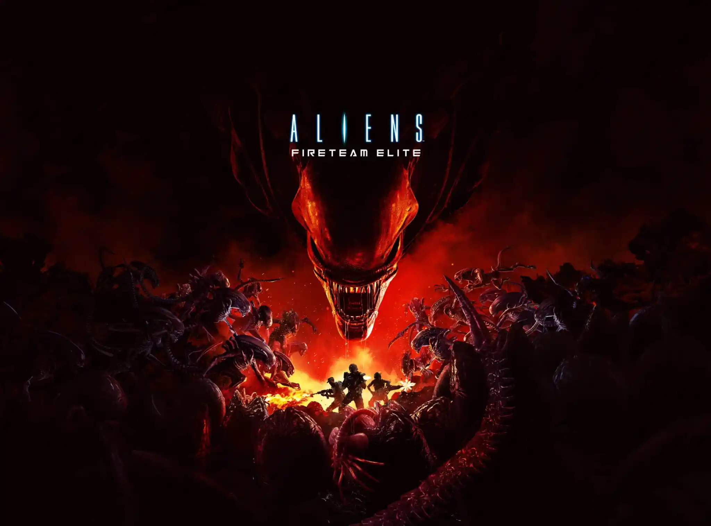
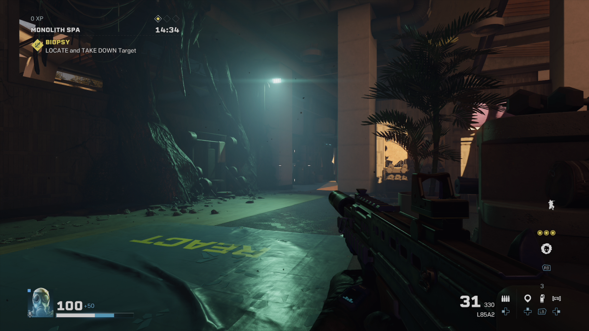
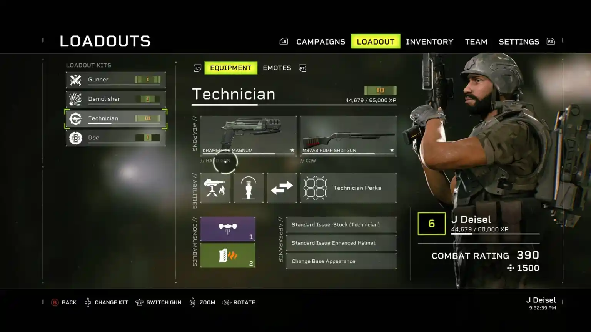

Alien: Fireteam Elite Impressions

ដោយ៖ Julian Harrisចុះផ្សាយ៖ ថ្ងៃទី ២៣ ខែសីហា ឆ្នាំ ២០២១នៅ ម៉ោង 1:58 រសៀល
នៅក្នុង Alien: Fireteam Elite អ្នកដើរតួជាផ្នែកមួយនៃអង្គភាពបេសកកម្មដែនសមុទ្រដែលកំពុងឆ្លើយតបទៅនឹងសញ្ញាទុក្ខព្រួយពី LV-895 នៅក្នុងអាណានិគមខាងក្រៅ។ ហ្គេមនេះកើតឡើងប្រហែល 20 ឆ្នាំបន្ទាប់ពីភាពយន្ត Alien 3។ នៅលើការធ្វើដំណើររបស់អ្នកតាមរយៈអ្នកបាញ់ប្រហារដែលមានមូលដ្ឋានលើគម្របអ្នកលេង 3 នាក់ អ្នកនឹងជួបប្រទះនូវប្រភេទផ្សេងៗនៃ Xenomorphs និងការលាតត្រដាងអាថ៌កំបាំងផ្សេងទៀតដែលខ្ញុំនឹងទុកឱ្យអ្នករកឃើញនៅលើរបស់អ្នក។ ផ្ទាល់ខ្លួន។ អ្នកនឹងអាចបង្កើតកងសមុទ្ររបស់អ្នក ប្ដូរការផ្ទុក និងអត្ថប្រយោជន៍របស់អ្នកតាមបំណង ដើម្បីបម្រើតាមតម្រូវការរបស់អ្នកនៅពេលដែលអ្នកប្រយុទ្ធតាមរយៈខ្មាំងសត្រូវ។
រឿង Aliens: Fireteam Elite រួមបញ្ចូលទិដ្ឋភាពនៃខ្សែភាពយន្ត និងរឿងព្រេងទាំងអស់ពីសកលលោក Aliens ។ តាមរយៈប្រអប់ផ្សេងៗគ្នានៅក្នុងហ្គេម និងវត្ថុដែលប្រមូលបាននៅជុំវិញផែនទីផ្សេងៗ អ្នករៀនបានច្រើនអំពី Xenomorphs យោធា និងអង្គការផ្សេងៗពីហ្គេម និងភាពយន្តផ្សេងទៀត។ តួអង្គដែលបានបង្កើតរបស់អ្នកមិនមានសាច់រឿងច្រើនហួសហេតុពេកទេ ប៉ុន្តែមានជម្រើសជាច្រើនដើម្បីធ្វើឱ្យពួកគេក្លាយជារបស់អ្នក។ ប្រសិនបើអ្នកជាអ្នកគាំទ្រខ្សែភាពយន្ត Alien និងរឿងព្រេងជុំវិញ អ្នកនឹងរកឃើញព័ត៌មានល្អៗជាច្រើន និងស៊ុត Easter ដែលលាក់ពេញហ្គេម។ ផ្នែកដ៏ល្អនៃការនិទានរឿងកើតឡើងតាមរយៈការប្រមូល។ អ្នកនឹងមិនជួបឈុតកាត់ច្រើនពេកទេ ពេលកំពុងលេង Fireteam Elite។ នេះមិនមែនជារឿងអាក្រក់ទេ ព្រោះវាជួយរក្សាអ្នកក្នុងសកម្មភាព។
ដំបូង ហ្គេម និងបរិស្ថានរបស់វាហាក់បីដូចជាដដែលៗ ប៉ុន្តែនៅពេលដែលអ្នកធ្វើឱ្យវាហួសពីផែនទីដំបូងមួយចំនួន បរិយាកាសនឹងបើកឡើង ហើយសត្រូវកាន់តែមានភាពចម្រុះ។ ថ្នាក់ផ្សេងៗ និងការប្ដូរតាមបំណងក្លាយជាមានប្រយោជន៍ជាងនេះបន្តិច ដោយសារការផ្លាស់ប្តូរទាំងនេះកើតឡើង។ បេសកកម្មជាច្រើនត្រូវបានរៀបចំឡើងស្រដៀងគ្នា។ ធ្វើឱ្យវាឆ្លងកាត់ច្រករបៀងមួយចំនួន រៀបចំការការពារ និងប្រយុទ្ធជាមួយរលកនៃសត្រូវ។ ទោះបីជារចនាសម្ព័នអាចទស្សន៍ទាយបានក៏ដោយ ក៏នៅតែមានកម្រិតល្អនៃការប្រកួតប្រជែង និងភាពសប្បាយរីករាយ។ ខ្ញុំមានស្ថានភាពជាច្រើននៅពេលដែលខ្ញុំចាប់ផ្តើមប្រើប្រាស់អាវុធតិច ហើយត្រូវរត់ទៅចំណុចចាប់អារម្មណ៍បន្ទាប់ទៀត។ ស្ថានភាពទាំងនេះបន្ថែមភាពតានតឹង និងភាពសប្បាយរីករាយជាច្រើនដល់ការបញ្ឈប់ធម្មតា និងការលេងហ្គេមដែល Aliens ផ្តល់ជូន។ នៅពេលដែលអ្នកកាន់តែមានជំនាញ អ្នកអាចចាប់ផ្តើមពិសោធន៍ជាមួយកាតប្រកួតប្រជែង។

ហ្គេមនេះត្រូវបានបង្កើតឡើងសម្រាប់ការលេងហ្គេមរួមគ្នា។ មានថ្នាក់ 4 ផ្សេងគ្នាដែលមាននៅពេលអ្នកលេងចាប់ផ្តើមហ្គេម។ ថ្នាក់អាចត្រូវបានប្តូររវាងដោយសេរីនៅក្នុងតំបន់មជ្ឈមណ្ឌល និងបានដំឡើងកំណែកាន់តែអ្នកប្រើពួកវា។ អ្នកអាចជ្រើសរើសរវាង Gunner, Demolisher, Technician និង Doc ហើយនៅពេលដែលអ្នកបញ្ចប់ហ្គេមជាលើកដំបូង Recon នឹងមាន។ ប្រសិនបើអ្នកកំពុងលេងទោលជាមួយ bots ខ្ញុំស្នើឱ្យសាកល្បងអ្នកបច្ចេកទេស ឬឯកសារសម្រាប់ការរស់រានមានជីវិតអតិបរមា។ មានសមាសធាតុផ្គូផ្គងតាមអ៊ីនធឺណិតសម្រាប់ហ្គេមនេះ ដូច្នេះហើយទើបបើកយុទ្ធសាស្ត្រផ្សេងៗសម្រាប់ក្រុមរបស់អ្នក។ ប្រសិនបើលេងជាមួយ bots ពួកគេនឹងតែងតែជា Gunners តាមលំនាំដើម ហើយពិតជាត្រូវបានស្នើសម្រាប់តែបេសកកម្មហ្គេមដំបូង និងការលំបាកទាបប៉ុណ្ណោះ។

សរុបមក Aliens: Fireteam Elite មើលទៅល្អណាស់។ វានឹងមិនមែនជារឿងល្អបំផុតដែលអ្នកមិនធ្លាប់ឃើញនោះទេ ប៉ុន្តែគំរូតួអក្សរ កាំភ្លើង គ្រឿងប្រើប្រាស់ និងបរិស្ថានគឺលម្អិតណាស់។ ពិតជាមានរឿងតែមួយគត់ដែលរំខានខ្ញុំពេលលេងហ្គេម។ នៅពេលនិយាយទៅកាន់តួអង្គផ្សេងៗគ្នារវាងបេសកកម្ម មាត់របស់ពួកគេមិនផ្លាស់ទីនៅពេលពួកគេនិយាយ។ នេះប្រហែលជាមានការរំខានបន្តិច ហើយវាប្រហែលជាមិនរំខានអ្នកដទៃដែលកំពុងលេងហ្គេមនោះទេ។
ដូច្នេះតើហ្គេមនេះសម្រាប់អ្នកណា? ប្រសិនបើអ្នករីករាយនឹងទិដ្ឋភាព PVE នៃ Rainbow Six Seige និងទិដ្ឋភាពខ្មោចឆៅ/ជនបរទេសនៃហ្គេមដូចជា Back 4 Blood និង Left 4 Dead អ្នកអាចស្វែងរកកន្លែងមួយជាមួយនឹង Rainbow Six Extraction។ អ្នកដែលត្រូវបានវិនិយោគយ៉ាងខ្លាំងក្នុងការលេងហ្គេម និងយុទ្ធសាស្ត្ររបស់ Seige អាចនឹងមិនរីករាយនឹងអ្វីដែល Extraction នាំមកដល់តារាង។ ខ្ញុំតែងតែចង់លេង Rainbow Six Siege បន្ថែមទៀត ប៉ុន្តែវាបានក្លាយជាបរិយាកាសប្រកួតប្រជែងខ្លាំង។ នេះគឺជាការរួមបញ្ចូលគ្នាដ៏ល្អនៃសកម្មភាព PVE និងយុទ្ធសាស្ត្រយុទ្ធសាស្ត្រ។ ប្រព័ន្ធផ្គូផ្គងធ្វើឱ្យប្រាកដថាអ្នកនឹងមានក្រុមជានិច្ច (ដរាបណាមូលដ្ឋានអ្នកលេងត្រូវបានឧទ្ទិស) ប៉ុន្តែខ្ញុំចូលចិត្តជម្រើសនៃការលេងតែម្នាក់ឯង។ ស្រដៀងទៅនឹង Back 4 Blood ការលំបាកអាចកើនឡើងហាក់ដូចជាគ្មានកន្លែងណាក៏ដោយ ប៉ុន្តែប្រព័ន្ធដំណើរការនឹងមិនទុកឱ្យអ្នកលេងមានអារម្មណ៍ខ្សោយពេកនោះទេ។
Rainbow Six Extraction គឺជាកន្លែងដ៏ល្អសម្រាប់អ្នកលេងជាច្រើនដើម្បីលោតចូលទៅក្នុងសកលលោក។ នេះប្រហែលជាមិនមែនជាហ្គេមសម្រាប់អ្នកលេង Siege រឹងរូសទេ ប៉ុន្តែវាមិនអីទេ។ ខ្ញុំជឿថាហ្គេមទាំងពីរនេះអាចរស់នៅស្របគ្នា និងឆ្ពោះទៅមុខជាហ្គេមវេទិកា។ Ubisoft កំពុងស្វាគមន៍ក្នុងក្រុមអ្នកលេងថ្មីជាមួយនឹងហ្គេមនេះហើយខ្ញុំរំភើបណាស់ដែលបានឃើញវា។ ខ្ញុំមានភាពសប្បាយរីករាយជាមួយក្រុម ហើយលេងអ្វីដែលប្លែកបន្តិច ហើយមិនសូវបែកញើស។ វាមានអារម្មណ៍ថាវាមិនអីទេក្នុងការលេងហ្គេមនេះ ហើយធ្វើខុស ហើយព្យាយាមម្តងទៀត។
អ្នកនឹងអាចទទួលបានដៃរបស់អ្នកនៅលើ Rainbow Six Siege ក្នុង តម្លៃ $39.99 ឬប្រសិនបើអ្នកជាអតិថិជន Gamepass វានឹងចេញលក់នៅថ្ងៃ និងកាលបរិច្ឆេទ។